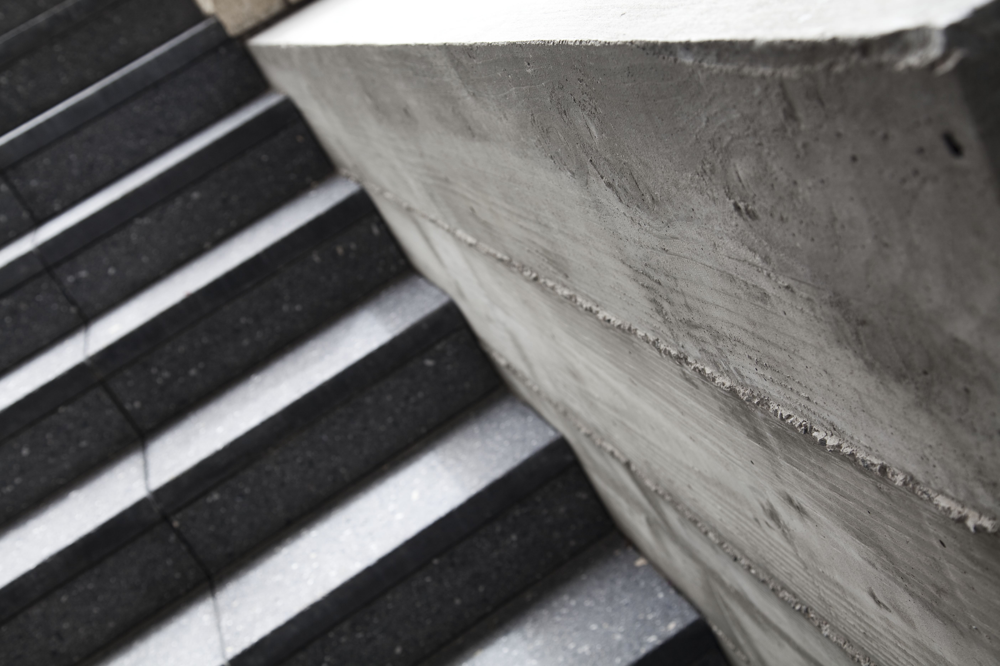
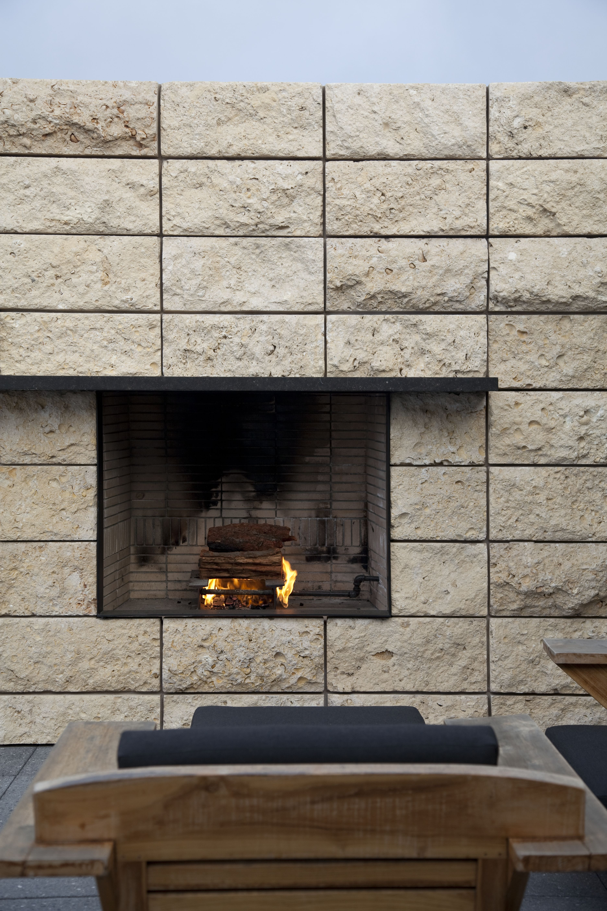

What is a
custom coffee table?
A custom coffee table is a piece of furniture built for a specific room — at the correct scale for the seating configuration, in a material and finish that coordinates with the surrounding cabinetry and interior elements, and to a structural standard that mass production cannot match. It occupies the center of the living space and, done well, anchors the room visually.
Custom coffee tables at H & J draw on the same material palette and construction methods as our cabinetry: premium hardwoods, clean joinery, and finishes applied to a furniture standard. They can be built in any design language — contemporary with clean lines and integrated stone surfaces, traditional with carved legs and inlaid panels, or transitional with warm wood and simple hardware.

What defines a great
custom coffee table?
A great coffee table works at three levels: structurally, it must be rigid without being heavy, functional without being fussy. Visually, it must be proportioned correctly for the room — neither too large for the seating arrangement nor too small to anchor the space. Materially, it must be built from something that rewards close inspection: a figured hardwood, a stone slab, a lacquered surface applied with care.
The joints are where the quality shows. Visible joinery — a through-tenon, a mitered corner, a dovetailed apron — communicates the standard of the maker. At H & J, we treat the joinery of our furniture with the same seriousness as the joinery of our cabinets.

- Premium hardwood selectionSolid walnut, white oak, maple, and cherry selected for figure and grain consistency.
- Structural joineryMortise-and-tenon, dowelled, and biscuit-reinforced construction built for long-term rigidity.
- Stone and metal integrationMarble, granite, and travertine tops, metal base components, and inlaid surface details available.
- Coordinated finish systemStain, lacquer, and oil finishes matched to the surrounding cabinetry and trim.
Custom furniture built
to a cabinetry standard
We build custom coffee tables as part of a complete living room or great room commission — alongside the entertainment cabinetry, the bookshelves, the built-in seating, and the architectural millwork. Building the table as part of the same program means the material, finish, and proportion are all designed in relationship to each other from the beginning.
The result is a room that holds together visually because every element was made by the same hands, to the same standard, at the same time. A custom coffee table from H & J is not a standalone purchase — it is part of the room.
"A custom coffee table built to the standard of the surrounding cabinetry transforms a collection of furniture into a room."



Serving Newport Beach, Corona del Mar, Irvine, Laguna Beach, and Orange County.